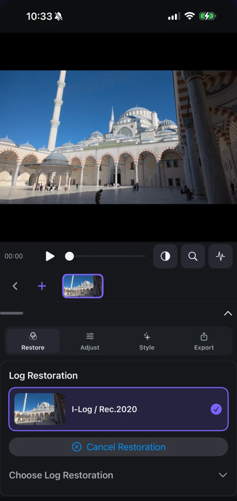
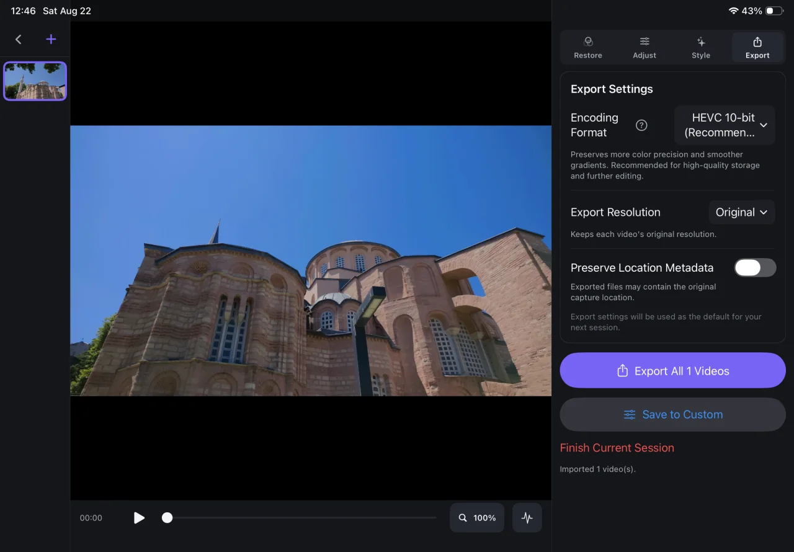

Restore Luna Ultra I-Log footage on iPhone
Start with an original clip recorded in I-Log on your camera. This walkthrough covers non-RAW, 10-bit HEVC footage from an Insta360 Luna Ultra.
A silent walkthrough of the published App Store screenshots.
Read the walkthrough
The iPad restoration and export panels show the same frame. The iPhone editor shows the I-Log input profile, the Mac editor shows its color wheels, and the iPad export panel shows the options for keeping available capture information.
Choose the camera originals
Connect your memory card to the iPhone, or save your clips to Photos first. In HUEO, choose From Files or From Photos and select the clips you want to restore.
To copy photos and videos from an external device into your library first, use the separate Import to Photos tool on the home screen.
Check the I-Log input
Open Restoration and check the input profile. If detection is uncertain, consult the camera’s recording settings and select the matching Luna Ultra I-Log / Rec.2020 profile.
Clips shot in a standard color mode already have contrast. Keep the correct input interpretation for those clips to avoid applying a second conversion.

iPhone · Log restoration Compare a frame, then grade the batch
Pause on a frame and compare with the original. Inspect skies, skin tones or deep shadows. Adjust exposure or white balance, then apply the shared adjustments to other clips.
Each clip keeps its own technical input transform. Preview clips from different lighting conditions before exporting the batch.
Save the results to Photos
In Export, choose your output settings and Photos as the destination. After saving, inspect the capture date on the finished video in Photos.
Keeping the date requires a usable timestamp in the source. Sort your library by capture date to find the result under the original shoot day.

iPad · Export settings


Try a clip from your own camera
Only successful file exports use your free allowance. Preview and check the restoration first.